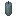
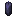
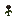
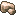
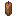
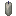
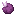
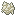
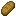

Ритуалы
Ритуал — магия мода, не связанная с переходом: усиления, призывы, порталы, восстановление рассудка. Доступен всем, даже без пути. Проводится за Ритуальным столом.
Как провести
- ПКМ по столу — окно ритуала.
- Положить свечу нужного цвета и жертвы — ровно столько, сколько указано.
- Вписать три строки хвалебного имени — по-английски, как в книге; заглавные буквы, запятые и точки не важны.
- Запустить ритуал кнопкой в окне, стоя не дальше 8 блоков от стола.
Свеча и жертвы тратятся всегда. Если набор или имя не совпали, вместо ритуала случается «вырождение»: рассудок −60 %, здоровье падает до 1, слепота. Записывай имя точно.
Рецепты ритуалов записаны в книгах ритуалов из сундуков, но провести ритуал можно и без книги — достаточно знать рецепт. Все 24 ритуала мода:
Шепчущий кодекс
Свеча  Паучий глаз ×2,
Паучий глаз ×2,  Маринованный паучий глаз ×1,
Маринованный паучий глаз ×1,  Порох ×2.
Порох ×2.
Действие: страх (сила 5) на всех вокруг в 16 блоках.
Хвалебное имя (три строки, как написано):
Voice that murmurs from the cracks between worldsDread that gnaws at the courage of lesser menSend your whisper to scatter those who oppose me.
Алхимический компендиум
Свеча Лаймовая свеча; жертвы:  Редстоуновая пыль ×3,
Редстоуновая пыль ×3,  Бутылочка ×2,
Бутылочка ×2,  Незерский нарост ×1.
Незерский нарост ×1.
Действие: Регенерация I на 7,5 с на себя; Спешка I на 2 мин на себя.
Хвалебное имя (три строки, как написано):
Brewer of potions that blur the line of life and deathHand that measures ruin and remedy in equal partsDistill your vigor into my failing body.
Фолиант смотрителя кладбища
Свеча   Кость ×3,
Кость ×3,  Гнилая плоть ×2.
Гнилая плоть ×2.
Действие: Иссушение IV на 10 с на всех вокруг в 8 блоках.
Хвалебное имя (три строки, как написано):
Reaper who walks unseen among the dying breathsSilence that follows after every ended lifeLet your cold touch wither the one who stands before me.
Литургия стража
Свеча Голубая свеча; жертвы:  Железный слиток ×3,
Железный слиток ×3,  Осколок аметиста ×1.
Осколок аметиста ×1.
Действие: Сопротивление II на 1 мин на себя.
Хвалебное имя (три строки, как написано):
Warden who bars the threshold against all intrusionWall that has never once been breachedSeal this ground against harm as you seal every door.
Гроссбух палача
Свеча Чёрная свеча; жертвы:  Кость ×3,
Кость ×3,  Порох ×2.
Порох ×2.
Действие: казнь (сила 5) на ближайшего в 8 блоках.
Хвалебное имя (три строки, как написано):
Headsman whose blade has never shown mercyVerdict that falls swift upon the condemnedCarry out your judgment on the one nearest to me.
Цирковая афиша
Свеча Чёрная свеча; жертвы:  Гнилая плоть ×3,
Гнилая плоть ×3,  Чернильный мешок ×2.
Чернильный мешок ×2.
Действие: призыв: Призрак ×4, Дервиш ×3, Пузырь ×3.
Хвалебное имя (три строки, как написано):
Ringmaster whose smile hides a thousand writhing facesClown who laughs loudest when the world begins to unravelSend your carnival to dance around me.
Справочник шулера
Свеча Жёлтая свеча; жертвы:  Кроличья лапка ×1,
Кроличья лапка ×1,  Кусочек золота ×4,
Кусочек золота ×4,  Изумруд ×1.
Изумруд ×1.
Действие: удача (+180 удачи) на себя.
Хвалебное имя (три строки, как написано):
Trickster who turns every wager in your favorDealer whose cards always fall the right wayTilt fortune's wheel to favor me instead.
Полевой дневник следопыта
Свеча  Кость ×2,
Кость ×2,  Перо ×4.
Перо ×4.
Действие: Скорость II на 4 мин на себя; Прыгучесть I на 4 мин на себя.
Хвалебное имя (три строки, как написано):
Silent stalker who tracks by scent and shadow aloneKeeper of a thousand hunts across a thousand nightsLend your prey's stumble to my step, that I may close the distance.
Дневник фонарщика
Свеча Оранжевая свеча; жертвы:  Светокаменная пыль ×4, Факел ×4,
Светокаменная пыль ×4, Факел ×4,  Фонарь ×1.
Фонарь ×1.
Действие: свет (сила 4) на себя.
Хвалебное имя (три строки, как написано):
Keeper of the flame that never gutters in the windGuide who lights the path for those lost in darknessKindle your light across this shadowed ground.
Руководство часовщика
Свеча Бирюзовая свеча; жертвы:  Кусочек железа ×6,
Кусочек железа ×6,  Редстоуновая пыль ×3,
Редстоуновая пыль ×3,  Часы ×1.
Часы ×1.
Действие: Спешка II на 4 мин на себя.
Хвалебное имя (три строки, как написано):
Engine that never tires and never misses its beatArchitect of gears that turn beneath the world's skinQuicken my hands to match your endless rhythm.
Атлас беглеца
Свеча   Эндер-жемчуг ×3,
Эндер-жемчуг ×3,
Действие: портал: Край.
Хвалебное имя (три строки, как написано):
Fugitive who slips between the seams of the worldShadow that is never where the hunters last lookedOpen a path for me to slip beyond their reach.
Дневник сновидца
Свеча Синяя свеча; жертвы:  Мембрана фантома ×2,
Мембрана фантома ×2,  Сахар ×3,
Сахар ×3,  Мак ×1.
Мак ×1.
Действие: Замедление III на 10 с на ближайшего в 10 блоках; Тошнота II на 10 с на ближайшего в 10 блоках.
Хвалебное имя (три строки, как написано):
Wanderer who walks the corridors between dreaming mindsKeeper of the hush that falls before sweet sleepDraw the nearest waking foe into your slumber's hold.
Откровения падшего
Ритуал-наказание: то же, что случается при ошибке в ритуале.
Свеча Чёрная свеча; жертвы:  Гнилая плоть ×1,
Гнилая плоть ×1,  Паучий глаз ×2.
Паучий глаз ×2.
Действие: вырождение (сила 6) на себя.
Хвалебное имя (три строки, как написано):
You are the degenerate nature of all beingsThe shadow that lurks in the hearts of menDefile and corrupt me so that I may get closer to you.
Альбом художника
Свеча Пурпурная свеча; жертвы:  Чернильный мешок ×4,
Чернильный мешок ×4,  Бумага ×2,
Бумага ×2,  Бутылочка ×1.
Бутылочка ×1.
Действие: Невидимость I на 10 с на себя; Скорость II на 10 с на себя.
Хвалебное имя (три строки, как написано):
Artist who paints the world exactly as it is notIllusion that fools even the sharpest watching eyeBlend my form into the canvas of the world.
Трактат учёного
Свеча Белая свеча; жертвы:  Книга ×2,
Книга ×2,  Сахар ×3,
Сахар ×3,  Золотая морковь ×1.
Золотая морковь ×1.
Действие: Насыщенность I на 5 с на себя; Поглощение I на 2 мин на себя.
Хвалебное имя (три строки, как написано):
Sage whose thoughts outlast the fall of empiresMind that finds order in the chaos of the worldSteady my thoughts and fortify my resolve.
Соборное писание
Свеча Белая свеча; жертвы:  Светокаменная пыль ×4,
Светокаменная пыль ×4,  Кусочек золота ×4,
Кусочек золота ×4,  Семена пшеницы ×2.
Семена пшеницы ×2.
Действие: очищение (сила 5) на себя; очищение (сила 5) на всех вокруг в 10 блоках.
Хвалебное имя (три строки, как написано):
Judge who weighs the sins hidden beneath a smiling faceFlame that burns away corruption without consuming the innocentScour this ground clean of what should not linger here.
Судовой журнал мореплавателя
Свеча Бирюзовая свеча; жертвы:  Ламинария ×4,
Ламинария ×4,  Осколок призмарина ×2, Черепаший щиток ×1.
Осколок призмарина ×2, Черепаший щиток ×1.
Действие: Водное дыхание I на 5 мин на себя; Грация дельфина I на 5 мин на себя.
Хвалебное имя (три строки, как написано):
Harbor-keeper who calms the fury of the open seaGuide of ships lost beneath the endless wavesGrant me safe passage through your drowned domain.
Альманах призывателя бурь
Свеча Голубая свеча; жертвы:  Железный слиток ×1,
Железный слиток ×1,  Осколок призмарина ×4,
Осколок призмарина ×4,  Медный слиток ×12.
Медный слиток ×12.
Действие: молнии (сила 6) на всех вокруг в 25 блоках.
Хвалебное имя (три строки, как написано):
Ancient one who slumbers beneath a ceiling of endless wavesLord of drowned fleets and the graveyards of sailorsLoose your storm's fury upon those who stand against me.
Солнечное писание
Свеча Жёлтая свеча; жертвы:  Светокаменная пыль ×4,
Светокаменная пыль ×4,  Сгусток магмы ×2,
Сгусток магмы ×2,  Огненный порошок ×1.
Огненный порошок ×1.
Действие: Регенерация II на 10 с на себя; Огнестойкость I на 1 мин на себя.
Хвалебное имя (три строки, как написано):
Sovereign whose light drives back the crawling darkFlame that warms the faithful and sears the wickedWrap me in your radiance and mend what is broken.
Альманах путешественника
Свеча Голубая свеча; жертвы:  Око Эндера ×1,
Око Эндера ×1,  Эндер-жемчуг ×2.
Эндер-жемчуг ×2.
Действие: портал: Мир духов.
Хвалебное имя (три строки, как написано):
Great traveler of the StarsYou are the Door of all Doors with the Key to the universeGrant me passage to a realm beyond my own
Эдикт завоевателя
Свеча Красная свеча; жертвы:  Железный слиток ×2,
Железный слиток ×2,  Красный краситель ×2,
Красный краситель ×2,  Гнилая плоть ×4.
Гнилая плоть ×4.
Действие: Сила II на 3 мин на себя; Сопротивление I на 1 мин на себя.
Хвалебное имя (три строки, как написано):
Crowned one whose throne is built on broken kingdomsWill that bends the weak and breaks the proudGrant me the strength to rule this ground by force.
Гимны друида
Свеча Зелёная свеча; жертвы:  Семена пшеницы ×2.
Семена пшеницы ×2.
Действие: цветение (сила 8) на себя.
Хвалебное имя (три строки, как написано):
Mother whose breath turns barren stone into blossoming fieldShe who feeds the roots that hold the world togetherLet life surge forth and green swallow this scarred earth.
Дневник поселенца
Свеча Белая свеча; жертвы:  Ведро молока ×1,
Ведро молока ×1,  Бутылочка мёда ×1.
Бутылочка мёда ×1.
Действие: восстановление рассудка (+40 % рассудка) на себя.
Хвалебное имя (три строки, как написано):
Keeper of the hearth where weary travelers find restWarmth that quiets the storm raging in the mindStill my thoughts and ease the weight I carry.
Кредо гладиатора
Свеча Красная свеча; жертвы:  Огненный порошок ×1,
Огненный порошок ×1,  Железный слиток ×2,
Железный слиток ×2,  Редстоуновая пыль ×4.
Редстоуновая пыль ×4.
Действие: поджог (сила 6) на всех вокруг в 26 блоках.
Хвалебное имя (три строки, как написано):
Champion who has never known the taste of retreatBlood-soaked banner raised over a hundred battlefieldsSet the ground ablaze beneath the feet of my enemies.